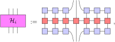

16. Fixed-Point algorithms#
In this section we introduce two algorithms for approximating the ground state of local gapped Hamiltonians using matrix product state techniques. Approximating ground states in a variational manner boils down to minimizing
over a restricted class of states \(D\). For simplicity, we will assume the Hamiltonian under consideration has an MPO representation of the form
{kind=link}
which can encode interactions of arbitrary range as discussed in the previous section. In this formulation, approximating the ground state of \(H\) is equivalent to finding the MPS fixed point the MPO Hamiltonian corresponding to the eigenvalue \(\Lambda\) with the smallest real part,

In the algorithms discussed below we optimize over matrix product states of a fixed finite bond dimension. In the first algorithm known as DMRG (density matrix renormalization group) the states we consider are finite MPS, whereas the second algorithm VUMPS (variational uniform matrix product state algorithm), as the name suggests, optimizes over uniform MPS. Hence, VUMPS enables direct optimization in the thermodynamic limit, without breaking translation invariance.
Our exposition of DMRG closes follows the one in [Bridgeman and Chubb, 2017], and that of VUMPS closely follows the excellent set of lecture notes [Vanderstraeten et al., 2019].
16.1. DMRG#
Starting from a random MPS ansatz, DMRG tries to approximate the ground state by sequentially optimizing over all the MPS tensors one by one and sweeping through the chain, until convergence is reached. Let us discuss this algorithm in a bit more detail step by step.
16.1.1. Algorithm#
Let us consider a random ansatz, by taking random tensors \(\{A_1,A_2,...,A_L\}\), \(L\) being the number of sites. Fixing all tensors but the one at site \(i\), the local tensor \(A_i\) is updated according to
{kind=link}
Though seemingly daunting we can turn this problem in a simple eigenvalue problem by making full use of the mixed gauge. By bringing all tensors on the right of \(A_i\) in the right canonical form and those to the left in left canonical form the denominator simply becomes \(\braket{A_i|A_i}\) and the update reduces to
{kind=link}
Here the effective Hamiltonian \(\mathcal H_i\), defined as
{kind=link}
encodes the effect of the full system Hamiltonian on the current center site \(i\). The variational problem of the local update can then be solved by finding the eigenvector of \(\mathcal{H}_i\) corresponding to the smallest real eigenvalue, and this repeatedly for every site sweeping back and forth through the chain, each time moving the orthogonality center of the MPS. At each update step a large part of the effective Hamiltonian can simply be reused, making the routine very efficient. Notice however that DMRG manifestly breaks translation invariance by updating one tensor at a time. As we will see, VUMPS does not suffer from this artefact.
From this brief explanation it should be clear that DMRG is a surprisingly simple algorithm. Nevertheless DMRG has proven itself time and time again, and is the most successful algorithm for variationally approximating the ground state of local gapped (1+1)d Hamiltonians. DMRG is implemented in MPSKit and can be called by DMRG().
16.1.2. Example#
Let us illustrate the use of DMRG in MPSKit by approximating the ground state of the transverse field Ising model. The Ising model is implemented in MPSKitModels as follows
where we are free to choose the parameters \(J\), \(h_x\) and \(h_z\), and \(X\) and \(Z\) are the generators of \(\mathfrak{su}(2)\), and thus differ from the usual Pauli matrices by a factor of \(\frac{1}{2}\).
Let us consider 16 lattice sites, bond dimension 12, open boundary conditions and let’s stick to the default critical values of \(h_x=0.5\) and \(h_z=0\). Finding the ground state using DMRG then only takes a handful of iterations!
using TensorKit, MPSKit, MPSKitModels
d = 2 # Physical dimension
L = 16 # Length spin chain
D = 12 # Bond dimension
H = transverse_field_ising()
algorithm = DMRG(); # Summon DMRG
Ψ = FiniteMPS(L, ℂ^d, ℂ^D) # Random MPS ansatz with bond dimension D
Ψ₀,_ = find_groundstate(Ψ, H, algorithm);
┌ Info: DMRG iteration:
│ iter = 1
│ ϵ = 0.0006739964499604456
│ λ = -20.01638790045475 - 8.528799494719094e-16im
└ Δt = 0.669874536
┌ Info: DMRG iteration:
│ iter = 2
│ ϵ = 1.5522145984740067e-7
│ λ = -20.016387900460085 - 1.0980857738929817e-15im
└ Δt = 0.084780873
┌ Info: DMRG iteration:
│ iter = 3
│ ϵ = 3.940749894816746e-8
│ λ = -20.016387900460277 - 1.190598951883556e-15im
└ Δt = 0.024753672
┌ Info: DMRG iteration:
│ iter = 4
│ ϵ = 1.1259612131344759e-8
│ λ = -20.016387900460295 - 1.3778739838334844e-16im
└ Δt = 0.026608355
┌ Info: DMRG iteration:
│ iter = 5
│ ϵ = 3.2262744758534126e-9
│ λ = -20.016387900460266 - 2.3550773487228467e-16im
└ Δt = 0.017372173
┌ Info: DMRG iteration:
│ iter = 6
│ ϵ = 1.0353544847385245e-9
│ λ = -20.016387900460266 + 8.425671080631389e-16im
└ Δt = 0.019880539
┌ Info: DMRG iteration:
│ iter = 7
│ ϵ = 4.090634084762595e-10
│ λ = -20.01638790046026 + 2.3991879736590536e-16im
└ Δt = 0.013848427
┌ Info: DMRG iteration:
│ iter = 8
│ ϵ = 1.6179257694995997e-10
│ λ = -20.016387900460273 - 2.3224041056927e-16im
└ Δt = 0.017111385
┌ Info: DMRG iteration:
│ iter = 9
│ ϵ = 6.405903325523971e-11
│ λ = -20.01638790046031 + 3.410860493986227e-16im
└ Δt = 0.011527551
┌ Info: DMRG iteration:
│ iter = 10
│ ϵ = 2.5388674362773124e-11
│ λ = -20.016387900460288 + 1.5293211658529326e-16im
└ Δt = 0.010563216
┌ Info: DMRG iteration:
│ iter = 11
│ ϵ = 1.007270753963581e-11
│ λ = -20.016387900460288 - 3.140138597982975e-16im
└ Δt = 0.014595845
┌ Info: DMRG iteration:
│ iter = 12
│ ϵ = 3.999333980249249e-12
│ λ = -20.016387900460273 - 1.182846751288624e-16im
└ Δt = 0.009193902
┌ Info: DMRG iteration:
│ iter = 13
│ ϵ = 1.5904051964512439e-12
│ λ = -20.01638790046029 + 3.3250045024503144e-16im
└ Δt = 0.008465969
┌ Info: DMRG iteration:
│ iter = 14
│ ϵ = 6.331894959699304e-13
│ λ = -20.016387900460263 + 2.259587844930368e-16im
└ Δt = 0.007794993
┌ Info: DMRG summary:
│ ϵ = 2.0e-12
│ λ = -20.016387900460263 + 2.259587844930368e-16im
└ Δt = 1.199928297
16.2. VUMPS#
As mentioned above, VUMPS optimizes uniform MPS directly in the thermodynamic limit. Since the total energy becomes unbounded in this limit, our objective should be to rather minimize the energy density. When working in the mixed gauge, this minimization problem can be represented diagrammatically as
{kind=link}
where we have introduced the left- and right fixed points \(F_L\) and \(F_R\) defined as

which obey the normalization condition
{kind=link}
The VUMPS algorithm offers the advantage of global optimalization by design, since the algorithm, contrary to DMRG, does not rely on individual updates of local tensors.
Given a Hamiltonian of the form mentioned above and an intial random uniform MPS defined by \(\{A_L, A_R,C\}\), VUMPS approximates the ground state by finding an approximate solution to the fixed-point equations
A detailed derivation that these equations characterize the variational minimum in the manifold of uniform MPS is beyond the scope of these notes, but see [Vanderstraeten et al., 2019].
In these equations the effective Hamiltonians \(H_{A_C}\) and \(H_{C}\) acting on \(A_C\) and \(C\) respectively are given by is given by
{kind=link}

The last equation then simply states that \(C\) intertwines the left - and right-orthonormal form of the tensor \(A\).
16.2.1. Algorithm#
Let us now explain step-by-step how VUMPS finds an approximate solution to the fixed-point equations in an iterative way.
We initialize the algorithm with the random guess \(\{A_L, A_R,C\}\), and chose a tolerance \(\eta\).
We first solve the first two eigenvalue equations
\[\begin{split} A_C = H_{A_C}(A_C), \\ C = H_C(C),\end{split}\]using for example an Arnoldi algorithm with the previous approximations of \(A_C\) and \(C\) as initial guess. This yields two tensors \(\tilde A_C\) and \(\tilde C\).
From \(\tilde A_C\) and \(\tilde C\) we compute \(\tilde A_L\) and \(\tilde A_R\) that minimize following two-norms
\[\begin{split} \epsilon_L = \min_{A_L^\dagger A_L=1} ||\tilde A_C-\tilde A_L\tilde C||_2, \\ \epsilon_R = \min_{A_R A_R^\dagger=1} ||\tilde A_C-\tilde C\tilde A_R||_2,\end{split}\]and thus approximately solve the last equation. Note that the minimum is taken over respectively left - and right isometric matrices. We comment below on the analytic soltuion of these equations and how this analytic solution can be approximated efficiently.
Update \(A_L\leftarrow\tilde A_L\), \(A_R\leftarrow\tilde A_R\) and \(C\leftarrow\tilde C\).
Evaluate \(\epsilon=\max(\epsilon_L,\epsilon_R)\) and repeat until \(\epsilon\) is below the tolerance \(\eta\).
Let us finally comment on solving the minimization problem to approximate \(\tilde A_{L/R}\).
A beautiful result in linear algebra states that the minimum is exactly given by \(\tilde A_L=U_lV_l^\dagger\) where \(U_l\) and \(V_l\) are the isometries arising from the singular value decomposition of \(\tilde A_C\tilde C^\dagger=U_l\Sigma_lV_l^\dagger\), and similarly \(\tilde A_R=U_rV_r^\dagger\), where \(\tilde C^\dagger\tilde A_C=U_r\Sigma_rV_r^\dagger\). Even though this approach will work well for the first iteration steps, this might not be the best solution close to convergence. When approaching the exact solution \(A^s_C=A^s_LC=CA^s_R\) the singular values in \(\Sigma_{l/r}\) become really small so that in finite precision arithmetic the singular vector in the isometries \(U_{l/r}\) and \(V_{l/r}\) are poor approximations of the exact singular vectors. A robust and close to optimal solution turns out to be
where the \(U\)’s are the unitaries appearing in the polar decomposition of
16.2.2. Example#
Let us demonstrate the algorithm using MPSKit by estimating the ground state energy density of the spin 1 XXX model. The VUMPS algorithm is called in the same way as we called DMRG. We initialize a random initial MPS with bond dimension 12 and physical dimension 3 (because the spin 1 representation of SU(2) is \(2\cdot1+1=3\)-dimensional). Obviously we don’t have to specify a system size because we work directly in the thermodynamic limit.
H = heisenberg_XYZ()
Ψ = InfiniteMPS(ℂ^3, ℂ^D)
algorithm = VUMPS()
Ψ₀, envs = find_groundstate(Ψ, H, algorithm);
┌ Info: VUMPS iteration:
│ iter = 1
│ ϵ = 0.339090706793728
│ λ = -1.0771041024813397 - 4.834030714681263e-17im
└ Δt = 0.089956755
┌ Info: VUMPS iteration:
│ iter = 2
│ ϵ = 0.06239886986683285
│ λ = -1.3901969399771135 + 2.996304081003457e-17im
└ Δt = 0.039562089
┌ Info: VUMPS iteration:
│ iter = 3
│ ϵ = 0.015047290462792011
│ λ = -1.4008831823721932 + 2.300252390134037e-17im
└ Δt = 0.008424383
┌ Info: VUMPS iteration:
│ iter = 4
│ ϵ = 0.010974928434094972
│ λ = -1.4012219196077262 - 3.999854494663643e-17im
└ Δt = 0.010237313
┌ Info: VUMPS iteration:
│ iter = 5
│ ϵ = 0.00837690380120873
│ λ = -1.4012864381728585 - 2.171303593086016e-17im
└ Δt = 0.010349372
┌ Info: VUMPS iteration:
│ iter = 6
│ ϵ = 0.003745493450360638
│ λ = -1.4013631889604223 + 5.840147833002231e-17im
└ Δt = 0.010228858
┌ Info: VUMPS iteration:
│ iter = 7
│ ϵ = 0.0016494473419177934
│ λ = -1.4013766301702935 + 3.7421731394412855e-19im
└ Δt = 0.009165549
┌ Info: VUMPS iteration:
│ iter = 8
│ ϵ = 0.0004566714584282262
│ λ = -1.401380297486741 - 4.978621459142672e-17im
└ Δt = 0.010451333
┌ Info: VUMPS iteration:
│ iter = 9
│ ϵ = 0.00015792801004710106
│ λ = -1.401380599425448 - 2.0478091914031045e-17im
└ Δt = 0.009641559
┌ Info: VUMPS iteration:
│ iter = 10
│ ϵ = 5.322921246860033e-5
│ λ = -1.401380638090707 - 4.9919068217930675e-17im
└ Δt = 0.009483795
┌ Info: VUMPS iteration:
│ iter = 11
│ ϵ = 1.925858108507124e-5
│ λ = -1.4013806427849123 - 5.60499003733664e-17im
└ Δt = 0.009531864
┌ Info: VUMPS iteration:
│ iter = 12
│ ϵ = 6.8301216789598324e-6
│ λ = -1.401380643421048 + 1.773094882373954e-17im
└ Δt = 0.020537785
┌ Info: VUMPS iteration:
│ iter = 13
│ ϵ = 2.5411662013527397e-6
│ λ = -1.4013806435046965 - 3.190721091568682e-17im
└ Δt = 0.006570627
┌ Info: VUMPS iteration:
│ iter = 14
│ ϵ = 9.205337506435754e-7
│ λ = -1.4013806435164082 - 4.0093032428173325e-17im
└ Δt = 0.006724364
┌ Info: VUMPS iteration:
│ iter = 15
│ ϵ = 3.468774370435845e-7
│ λ = -1.4013806435179883 + 4.940394034017958e-18im
└ Δt = 0.006698997
┌ Info: VUMPS iteration:
│ iter = 16
│ ϵ = 1.270190287203923e-7
│ λ = -1.4013806435182132 + 1.823204108600521e-17im
└ Δt = 0.006717691
┌ Info: VUMPS iteration:
│ iter = 17
│ ϵ = 4.816066437110659e-8
│ λ = -1.4013806435182434 - 3.020295700698097e-18im
└ Δt = 0.006633875
┌ Info: VUMPS iteration:
│ iter = 18
│ ϵ = 1.7749135136815212e-8
│ λ = -1.4013806435182499 - 3.142076215033246e-17im
└ Δt = 0.006653862
┌ Info: VUMPS iteration:
│ iter = 19
│ ϵ = 6.753073998880182e-9
│ λ = -1.401380643518249 + 4.226344027291808e-17im
└ Δt = 0.006685672
┌ Info: VUMPS iteration:
│ iter = 20
│ ϵ = 2.4998602041758693e-9
│ λ = -1.4013806435182483 + 1.1562780442627452e-17im
└ Δt = 0.007318115
┌ Info: VUMPS iteration:
│ iter = 21
│ ϵ = 9.532532331588757e-10
│ λ = -1.4013806435182492 - 5.9728249204534245e-18im
└ Δt = 0.007159167
┌ Info: VUMPS iteration:
│ iter = 22
│ ϵ = 3.540958387355769e-10
│ λ = -1.4013806435182508 + 2.3868145508222475e-17im
└ Δt = 0.019903569
┌ Info: VUMPS iteration:
│ iter = 23
│ ϵ = 1.35241272828309e-10
│ λ = -1.40138064351825 + 8.04532131942144e-17im
└ Δt = 0.00668469
┌ Info: VUMPS iteration:
│ iter = 24
│ ϵ = 5.038293757395338e-11
│ λ = -1.401380643518249 + 4.9972900972429316e-17im
└ Δt = 0.006715367
┌ Info: VUMPS iteration:
│ iter = 25
│ ϵ = 1.9266536462696784e-11
│ λ = -1.4013806435182494 + 1.2630473195022859e-17im
└ Δt = 0.006620891
┌ Info: VUMPS iteration:
│ iter = 26
│ ϵ = 7.1960825391982156e-12
│ λ = -1.4013806435182496 + 1.211031753065777e-17im
└ Δt = 0.006696622
┌ Info: VUMPS iteration:
│ iter = 27
│ ϵ = 2.75453507613522e-12
│ λ = -1.401380643518249 - 4.580474929392467e-17im
└ Δt = 0.006627874
┌ Info: VUMPS iteration:
│ iter = 28
│ ϵ = 1.0310178408168288e-12
│ λ = -1.4013806435182508 + 5.007719173358308e-17im
└ Δt = 0.005788705
┌ Info: VUMPS iteration:
│ iter = 29
│ ϵ = 3.952588528900685e-13
│ λ = -1.4013806435182496 - 4.220099749234338e-17im
└ Δt = 0.005702153
┌ Info: VUMPS summary:
│ ϵ = 3.952588528900685e-13
│ λ = -1.4013806435182496 - 4.220099749234338e-17im
└ Δt = 1.216701932
It takes about 30 iterations and a second or two to reach convergence. Let us gauge how well the ground state energy density was approximated by calling
expectation_value(Ψ₀, H)
1-element PeriodicArray{ComplexF64, 1}:
-1.4013806435182488 + 2.8941135167805426e-17im
The value we obtain here is to be compared with the quasi-exact value -1.401 484 038 971 2(2) obtained in [Haegeman et al., 2011]. As you can see, even with such a small bond dimension we can easily approximate the ground state energy up to 3 decimals.